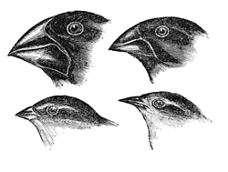

Evolution betyder forandringer. Der findes forskellige former for evolution læs Darwins teori. Ligesom vi som mennesker har udviklet os i flere million år for at få den bedste chance til at overleve. Evolution sker for alle levende organismer. Når to Seksuelt reproducerende deler DNA eller en aseksuelt reproducerende celle duplikerer dens DNA vil der blive produceret et afkom, men denne proces er ikke altid perfekt så der vil forekomme fejl i DNA’et. I nogle tilfælde medfører små forskelle i DNA’et som kan ændre dit udseende. Disse Små forskelle over generationer kan lave kæmpe forandringer . I nogle familier kan man kun opleve at de forandret egenskaber hos mændene, men i andre tilfælde det ses hos begge køn. Der findes forskellige former for evolution læs. Ligesom vi som mennesker udviklet os i flere hundred tusind år for at få den bedste chance til at overleve.
Charles Darwin er en naturforsker og geolog fra 1800-tallet. Han udgav en bogen arternes oprindelse der omhandlede evolution.
Teorien som Darwin fandt frem til i evolution, var at udover seksuel reproduktion så er der andre måder på at udvikling kan påvirkes af. Det som Darwin påstod er at der i arternes evolution foregik en udvælgelse, altså en naturlig selektion som Darwin kaldte det. Naturlig selektion er en af de vigtigste koncepter inde for teorien om evolution. Fordi, at hvis alle afkom indenfor en art overlever og formerer sig, så vil populationen vokse eksplosivt. Men i hver generation er antallet af individer oftest nogenlunde konstant, og derfor må der være et udvælgelsesprincip. ”Den naturlige selektion er en proces hvor tilfældig evolutionære forandringer er udvalgt af naturen for at få den bedste tilpasning til deres omgivelser”. Disse tilfældige forandringer som er udvalgt af naturen, kan være så forskellige for deres oprindelige art så der opstår nye arter, en artdannelse. Naturlige selektion går altså ud på at det afkom som er bedst tilpasset overlever ikke de stærkeste. Historien bag hvordan Darwin kom frem til den konklusion, forklares i næste afsnit omkring Darwins tid på Galapagos.
Lamarcks teori minder meget om Darwins teori, han mente at dyrene aktivt tilpasser sig ind i deres omgivelser ved udvikling for at ændre deres omstændigheder for at overleve. Så hvis et dyr brugte en kropsdel meget, så ville den specifikke del blive større, og det modsatte ville ske hvis en kropsdel blev brugt mindre. Et godt eksempel som er beskrevet i Lamarck teori er at giraffens hals og forben er lange fordi den skulle strække sig for at kunne nå de høje træers blade.
I 1831 blev Charles Darwin inviteret til en jordomsejling på HMS-beagle hvor han skulle indsamle forskellige arter og fossiler der skulle bruges til forskning når han bragte dem tilbage til England. Under hans rejse, sejlede de også forbi Galapagos øerne, hvor Darwin blev forundret over nogle forskellige fuglearter, der mindede meget om den nordamerikanske finke. Da Darwin rejste tilbage til England, begyndte han at udforske de forskellige arter han tog tilbage, og han opdagede at selvom de havde forskellige udseende, så var de stadig ens på nogle punkter. Herved konkluderede Darwin, at ud fra de forskellige levevilkår der var på øerne, så har de udviklet sig for at kunne passe til de specifikke vilkår. F.eks. så har nogle af fuglene et større og kortere næb samt mindre kløer, som ville være bedre til at åbne og spise nødder på en af øerne hvor der er mange planter at kunne indsamle mad fra. I forhold til nogle af de andre finker, som har tyndere og længere næb med skabere kløer, for at nemmere kunne få fat på insekter i områder hvor der ikke var lige så meget mad fra planterne.
Historien bag menneskets udvikling startede omkring 7 millioner år siden, Hvor mennesket og chimpanser blev udskilt fra hinanden. Der er blevet fundet 20 forskellige fossiler og tegn på forskellige menneske arter, hen over tiden. De her arter, er kategoriseret som Hominins. Hominins inddeles i tre slægter Ardipithecus, Australopithecus og Homo. Ardipithecus er de tidligste forfædre vi har, de opstod for omkring 4 millioner år siden i Afrika. De har meget tilfælles til deres seneste forfædre chimpanser og derfor havde de mange abelignende egenskaber. De første fossiler der med sikkerhed synes at være menneskelignende, er 3-4.5 millioner år gamle og kaldes Australapithecinere. De er karakteriserede ved deres oprette gang på 2 ben.
Den tredje og sidste fase i menneskets udvikling Homo. Homo er i modsætning til de tidligere Hominis meget mere menneskelig lignede, de var klogere og var den første menneske race som
udviklet redskaber med sten. Udover det er også den første til at kontrollere ild, disse
tilpasninger gjorde det muligt for homo racerne til at vandre ud af Afrika og udforske
resten af verdenen. Hominin hjerneekspansion følger tæt med forbedringer i
værktøjsteknologi, men der er andre faktorer, der kan have bidraget til hjernens stigende
størrelse, såsom social kompleksitet, fourageringsstrategier, symbolsk kommunikation.
Vi ved jo at homo racerne var yderst kompetente med at jage bytte gruppevis og derfor
måtte de tilsvarende have en god social evne til at kommunikere og koordinere deres
angreb mod hinanden.
Undervejs udkonkurrerer Homo sapiens så de tidligere mennesker, herunder Homo
erectus der uddør i Asien for ca. 50,000 år siden og Neanderthaleren der uddør for
ca. 30,000 år siden i Europa. Evolutionen af det moderne menneske omfatter altså ikke
bare en arts udvikling. Derimod har flere samtidige menneskearter gennemgået
evolutionære udviklinger, og direkte udkonkurreret hinanden.